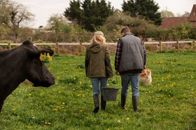

Вот лишь несколько эпизодов деятельности Винченцо

Винченцо спасает деревню от бешеной ярлычной коровы
Изображение от freepik
В 2020 году деревню Черноболотово поразила страшная беда: корова Мурёнка взбесилась, не давала молока и бросалась на доярку Матрёну и техника Якова. Никто не мог помочь бедным селянам, пока не появился Винченцо. Он вошёл в астральную связь с коровой (да, такое тоже возможно) и выяснил, что корова белены объелась и делает это регулярно. Чтобы решить пробелму, Винченцо тоже объелся белены, принял на себя удар отравы, но, пережив его, выкосил белену и велел посыпать тот участок солью, чтобы проклятье пало и трава не росла. Корова несколько дней погрустила и снова начала давать молоко, которое поначалу отдавало горечью...
Изображение от freepik
Винченцо возвращает лопнутый водопровод и жизнь в Мухосранск
Как и во многих городах, в Мухосранске пропала вода в водопроводе, а счета за коммуналку всё приходили и приходили. ЖКУ-шники перепроверяди
трубы много раз, но не могли понять, куда делась вода, которая в трубу входила, но не попадала в краны жителей.
Жители десятки раз обращались к мэру города, жившему в трёхэтажном особняке, но и он не мог помочь.
Только и оставалось жителям, что надеяться на чудо. И вот явился